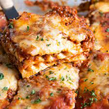

Lasagna

Description
Lasagna is a mouthwatering Italian classic that is sure to satisfy even the most discerning taste buds. Layer
upon layer of flat pasta sheets are generously smothered with a rich and savory combination of slow-cooked
tomato sauce, seasoned ground meat, aromatic herbs, creamy ricotta cheese, and melted mozzarella. This
delectable masterpiece is then baked to golden perfection, creating a harmonious blend of flavors and textures.
With its comforting warmth and hearty appeal, lasagna is a beloved dish that brings families and friends
together around the dinner table.
Ingredients
- Pasta sheets
- Tomato sauce
- Ground meat (beef, pork, or a combination)
- Ricotta cheese
- Mozzarella cheese
- Parmesan cheese
- Onion
- Garlic
- Olive oil
- Italian seasoning
- Salt and pepper
- Eggs
- Herbs (such as basil and oregano)
- Vegetables (such as spinach or mushrooms, optional)
Recipe
- Preheat the oven to 375°F (190°C).
- In a large skillet, heat olive oil over medium heat. Add diced onions and minced garlic, sauté until fragrant and translucent.
- Add the ground meat to the skillet and cook until browned. Drain excess fat if necessary.
- Pour tomato sauce into the skillet with the cooked meat. Stir in Italian seasoning, salt, and pepper. Simmer the sauce for about 10 minutes, allowing the flavors to meld together.
- In a separate bowl, combine ricotta cheese, grated Parmesan cheese, beaten eggs, and a pinch of salt. Mix well to create a creamy filling.
- Spread a thin layer of the meat sauce on the bottom of a baking dish. Place a layer of pasta sheets on top, covering the sauce.
- Spoon half of the ricotta cheese mixture evenly over the pasta sheets.
- Add another layer of pasta sheets, followed by a generous amount of the meat sauce. Sprinkle shredded mozzarella cheese on top.
- Repeat the layers with the remaining ingredients, finishing with a layer of pasta sheets and a final sprinkle of mozzarella cheese.
- Cover the baking dish with aluminum foil and bake for 25 minutes. Then, remove the foil and bake for an additional 15 minutes or until the cheese is golden and bubbly.
- Remove the lasagna from the oven and let it cool for a few minutes. Slice into portions and serve hot.
Return to top
Return to main page